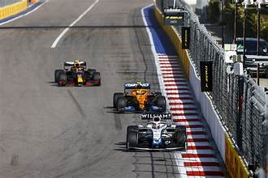
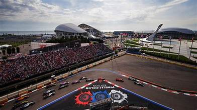
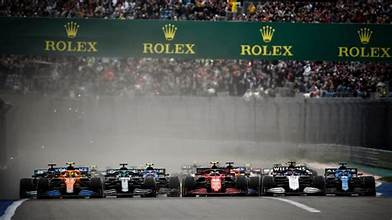
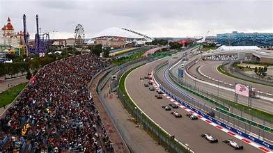
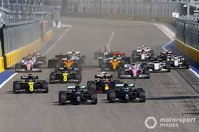

The Russian Grand Prix was a Formula One World Championship race held at the Sochi Autodrom, built within the Olympic Park complex constructed for the 2014 Winter Olympics. First held in 2014, the race became one of the most uniquely situated on the F1 calendar, with cars racing through the very infrastructure built for the Winter Games.
The Sochi Autodrom is a 5.848 km street circuit that winds through the Olympic Park, passing directly in front of the Fisht Olympic Stadium and around the venues used in the 2014 Games. Designed by Hermann Tilke, the circuit features 18 corners and a long pit straight. The layout's combination of slow technical sections and high-speed sweepers made it a unique challenge for drivers and teams alike.
The Russian GP was held annually from 2014 until 2021, producing memorable moments including Lewis Hamilton's record-equaling and record-breaking victories, and dramatic battles in wet conditions. The race attracted massive crowds to the Sochi Olympic Park, combining the spectacle of Formula One with the world-class facilities of an Olympic venue. Local hero Daniil Kvyat's performances always drew passionate support from Russian fans.
Russia has hosted major sporting events beyond Formula One, including the 2018 FIFA World Cup, 2014 Winter Olympics, and numerous athletics and winter sports championships. These events transformed host cities, leaving behind world-class stadiums, transport infrastructure, and sports facilities now available for public use and tourism.


